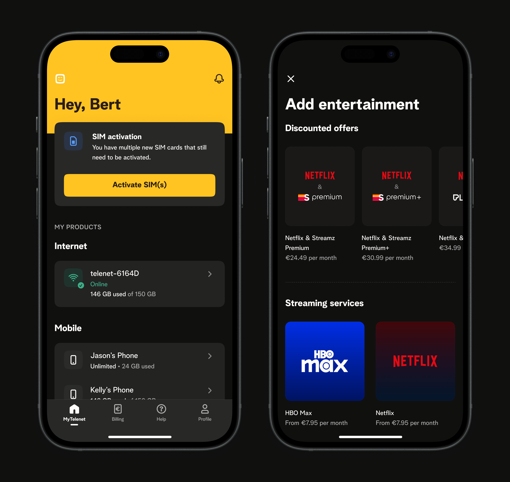

The challenge
Telenet faced a critical business challenge: poor performance and user experience of their digital products caused customers to seek help through other channels. This led to overwhelming pressure on call centers and shop agents, resulting in long wait times. Ultimately, the situation sparked numerous complaints and drove customers to switch to competitor providers.
To restore customer confidence, we focused on improving quality standards and implementing a digital-first strategy.
Objectives
- Redefine the information architecture to fit the users’ mental model.
- Reduce stress on call centres and shops by improving existing features, and adding new ones
- Increase engagement to fit Telenet’s digital-first support strategy.
- Decrease churn rate after following a critical business incident.
Responsibilities
- UX & UI Design
- User Research
- Prototyping & Testing
- Visual Design, Branding, and Art Direction
- Stakeholder Management
Impact
- 5.5% lower churn rate
- 13.2% less calls from the app
- App store ratings went up from 3.8 to 4.3
Research & Discovery
Who is this for?
To better understand user needs and behaviour, we base ourselves on 5 user segments. This helps us link the right solutions and gain a clearer understanding of end users.
- 27% young adults under 45
- 16% parents with kids under 12
- 18% parents with kids over 12
- 25% seniors & mediors between 45 and 60
- 14% seniors over 60
This broad and balanced distribution made it clear that we needed all journeys be usable and easily understandable by people with low understanding of digital products. Leading us to favour abundantly explicit and plain language, simple patterns, low cognitive load, and high contrast.
Heuristic evaluation
Conducted a heuristic evaluation with four evaluators (including myself) to identify major usabibility issues. Findings included:
- Poor information hierarchy & architecture.
- Broken navigation logic.
- Lack of control and feedback on transactional actions.
- Inconsistent UI components.
- Unique, untested patterns that violated Jakobs' law.
Matching users’ mental model: finding the right information architecture
We started by listing tasks a users can (or should be able to) perform on our digital platforms in no particular order of priority. We then conducted a card sorting exercise, giving us an idea of a what our IA should look like.
Card sorting tasks
We formed a hypothetical IA, conducted tree testing, and fine-tuned it until we reached a satisfactory success rate of 80%.
Preview of the new tree structure
Validation
After finding the a suitable IA we went ahead and started shaping early concepts/wireframes into prototypes for usability testing. We framed them to test high priority tasks that would showcase whether the manifestation of the architecture was clear enough to a user.
Low fidelity testing prototypes
Key insights
- Navigating felt intuitive. During high-fidelity wireframe testing, users did not encounter difficulties navigating and finding solutions for their assigned tasks. Validating the tree structure and first wireframes.
- Users think in products and ‘objects’. What we noticed during user testing, is that most users used a “product first” approach when trying to perform a task. They first navigated to said product, then looked for a way to perform the task itself.
- Arbitrary business names didn’t mean anything to users. User do not understand product names. Leading us to the conclusion that we needed to emphasise product categories and de-emphasise product names (Internet, Mobile, TV, Landline).
- The landing page was often skipped entirely. We noticed a lot of users not making use of the landing page and simply skipping to other areas of the app when asked to perform a task. More often than not, they went to their products page.
Planning
To fit the agile nature of the project, we chose to cut up the redesign into smaller increments (or phases) that could each be release candidates for the end-user, without feeling like a broken experience. The first phase consisted of shaping the navigation to fit the new information architecture, shifting and lifting existing blocks to where they belong. The subsequent phases all consisted of redesigning individual blocks.
Incremental releases
Example of more granular improvements
- Bubbles: when leaving out the “used” or “available” labels, there was a 50-50 split of users thinking the shown value was remaining data vs. used data.
- Bars: 92% of users understood that the leading value was used data instead of remaining data.
- Users expected the bar to fill up left to right, versus empty out from right to left.
Left: old usage visualition; Right: redesigned usage visualisation.
Collaboration & Implementation
We worked in an agile setup to collaborate and deliver efficiently. Our goal was to favor multi-disciplinary discussions over rigid handover processes. This was a challenge to maintain in a company in a company where processes and fragmented ownership reinged king. However, we managed to make a strong case for end-to-end ownership.
We were able to deliver high quality work that delivered on the promise with a fast pace, and ended up leading by example.
Examples of mordenised components
Examples of detailed designs used for handover
Showcase
Themes such as dark mode powered by Design Tokens